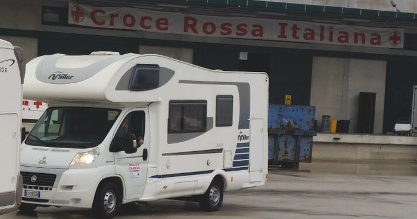
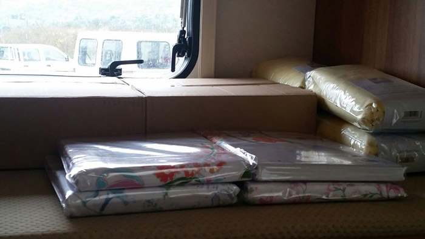
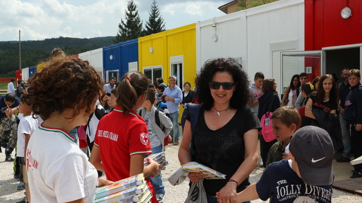
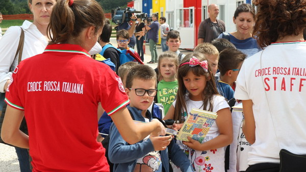

Foto
Le operazioni di soccorso

Volontari Croce Rossa al lavoro tra le macerie

Mezzi Croce Rossa

Squadra di soccorso
20 camper per gli allevatori colpiti dal terremoto nel Centro Italia

I camper trasformati in moduli abitativi provvisori

L’urgenza degli allevatori di rimanere a contatto con i loro terreni è da considerarsi prioritaria, soprattutto per favorire la ripresa di un territorio fondato anche sulla pastorizia
Terremoto Centro Italia: Amatrice, primo giorno di scuola

Consegna dei diari il primo giorno di scuola

Un volontario consegna i diari

Bambini in fila per la consegna dei diari
Altre foto disponibili sulla sezione del sito di Croce Rossa Italiana.